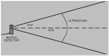

Introduction
Use data from Vernier Go!Temp and Go!Motion sensors to bring real world data into your Scratch projects.
- Use the Go!Temp extension to obtain a real-time temperature reading from a connected Go!Temp probe.
- Use the Go!Motion extension to obtain a real-time position reading from a connected Go!Motion device.
Getting Started
Install the Scratch Extensions Browser Plugin
In order to connect Scratch to a Go! device, you will need to install a web browser plugin. Follow steps 1 and 2 on the Scratch Extensions Browser Plugin webpage to download and install the plugin.
Note: At the moment, you cannot use a Vernier Go! extension in a Chrome web browser on Mac OS X; this is a Chrome-only issue on Mac OS X. The plugin will work in Safari and other Mac web browsers.
The extension should work in any browser (with the plugin installed) on a Windows computer.
Load the extension
Launch one of the Vernier Go! extensions by going to one of the following URLs:
Connect your Go! device
Connect the USB cable of your Go! device to your computer.
Wait for the green light
When you see the indicator light in the "More Blocks" tab turn green you are ready to start using the extension. The green LED on the Go! device should also be lit.
Collect the data
Now the Go! device should be generating a real-time measurement two times every second and you can integrate quantities of temperature or distance into your Scratch projects.
Sample Projects
There are also a few sample projects that demonstrate how to integrate real world physical measurements into your Scratch projects. Just click one of the following URLs:
Technical Details about the Go! Sensors
As you begin to use the Go!Temp and Go!Motion sensors in your Scratch projects, there are some technical details about the sensors that are helpful to keep in mind.
Go!Temp
The Go!Temp will read temperatures between -20 and 115 °C, to an accuracy of +/- 0.5 °C. The sensing element in the Go!Temp is located at the very tip of the probe.
It responds to a change in temperatures in about 4 s; the Go!Temp will not measure rapid temperature changes faster.
For additional information about the Go!Temp, refer to its user manual.
Go!Motion
The Go!Motion sensor measures the distance to a person or object between 0.15 and 6 m away, with an accuracy of 2 mm. To measure the distance,
the Go!Motion makes a clicking sound, records the time until it hears the sound's echo, and then calculates the distance using a temperature-corrected speed of sound.
The Go!Motion can "see" any object within a cone-shaped area about 15° to 20° off the axis of the center line of the gold foil transducer on the head of the Go!Motion.
Note that Go! Motion will report the distance to the closest object that produces a sufficiently strong echo. Go! Motion can pick up objects such as chairs and tables in the cone of ultrasound.

The Go!Motion has a sensitivity switch located under the pivoting Go!Motion head. The Ball/Walk setting is best for tracking large objects, large distances,
and objects that are poor reflectors. The Track setting is best for tracking smaller, closer objects.
For additional information about the Go!Motion, refer to its user manual.
Authors and Contributors
This page and the Go! Device extensions are maintained by Vernier Software & Technology (@VernierSoftwareTechnology). Special thanks to Kreg Hanning (@khanning) and the Scratch Foundation for their support, encouragement and for creating a fun and dynamic tool for exploring engineering and programming.